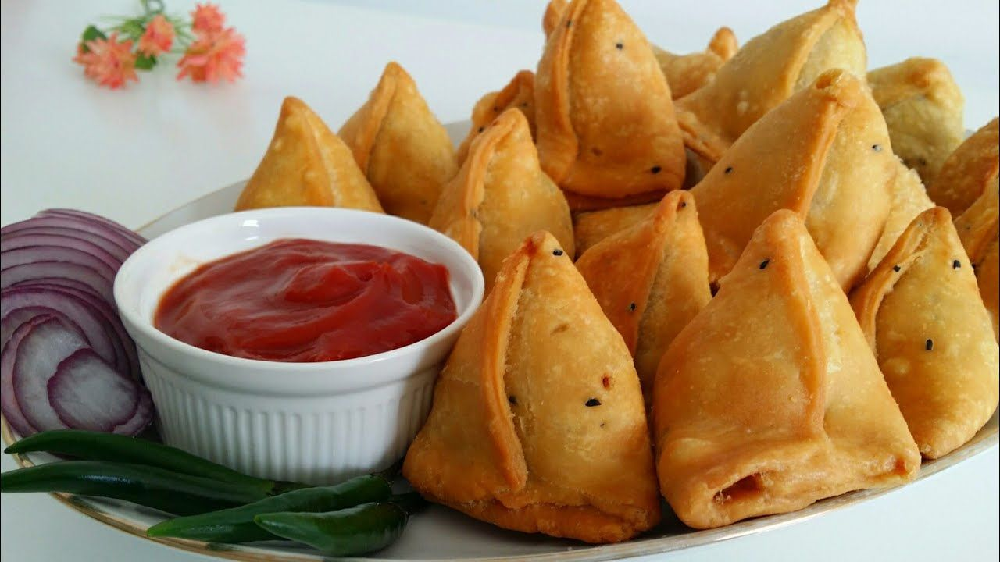

SAMOSA

Something all you need in life is spicy and crispy
Crispy, spicy and delicious Samosa is something that we
all love with our hot cuppa of chai and there's hardly anyone who hates this desi snack !
Here's what you need
- Aats/Maida - 1 cup
- Ghee/Oil - 2-3 tbspn
- Ajwain/-1/4 teaspoon
- Salt - as per taste
- Bolied Potatoes - 4-5 tablespoons
- Ghee/oil - 2 tablespoons
- Whole Dhaniya seeds
- Whole Saunf seeds
- Green Chilli - 1-2
- Fresh Coriander - handful
- Ginger - 1 inch
- Salt - As per taste
- Black pepper powder - 1 teaspoon
- Mango Power - 2 teaspoon
Method
- Mix Atta, Salt and Ajwain.
- Add ghee and rub it to coat all the flour.
- Add cold water to make a aemi atiff dough.
- Knead for 2 mins.
- Cover and keep aside for 15-20 mins.
- Add oil to a kadhai, add whole spices. (Roast and grind them roughly fpr a better flavor)
- Let it cool down.
- Divide the dough into 4 balls.
- Roll each ball to form an oblong chapatti.
- Cut in to halves, shape into a cone and stuff them up.
- Seal your Samosa and put aside for 5 mins
- Bake in a pre heated (200 degrees) oven for 15-20 mins.
- Alternatively you may fry them on medium Flame till golden brown.
- Serve hot with Chutneys.